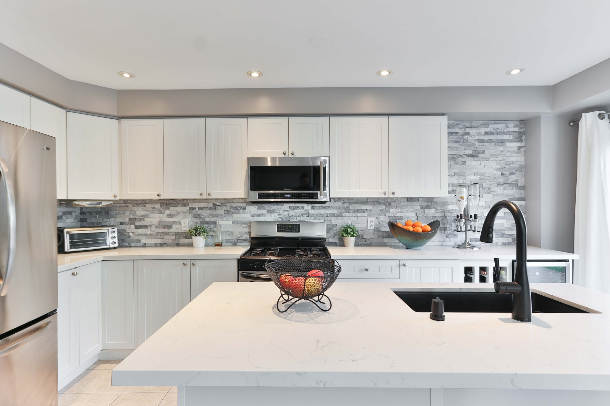
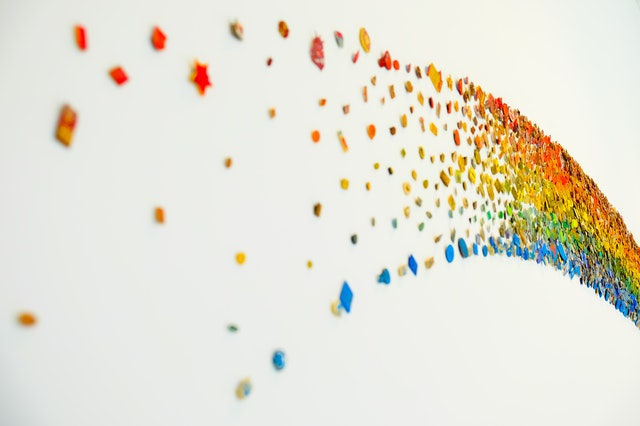

finding simplicity in life
information
Life can get complicated really quickly, but it does't have to be! There are many ways to simplify life, a few of which we've explored in the past. This week we are taking a bit of a approch though, in how you can find simplicity in the life you already living.
continue reading
Keeping cooking simple

information
Food is a very important part of everyone's life. If you want to be healthy, you have to eat healthy. One of the easiest ways to do that is to keep your cooking nice and simple.
continue reading
Simplicity and work

information
Work is often a major source of stress. People get frustrated, it ruins their relationship with others and leads to burnout. By keeping your work life as simple as possible you will help balance everything out.
continue reading
Simple decorations
information
A home is not a home until you have decorated it a little. People either do not decorate it at all, or they overdo it and it does not have the impact they were hoping for. Staying simple will help draw the eye where you want it to.
continue reading